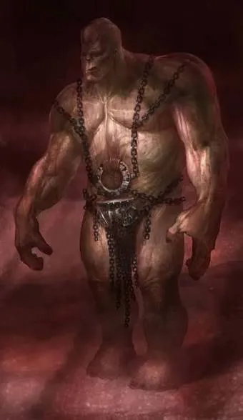
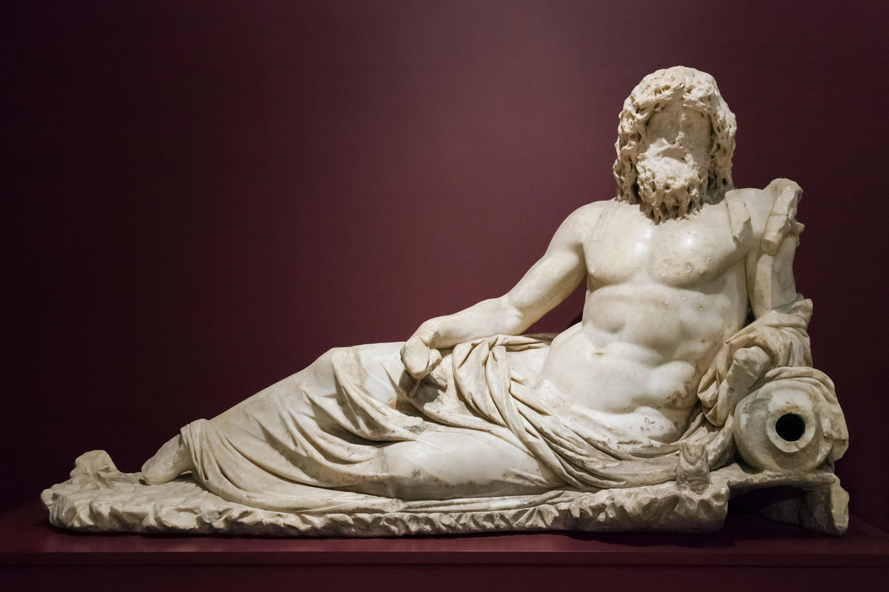
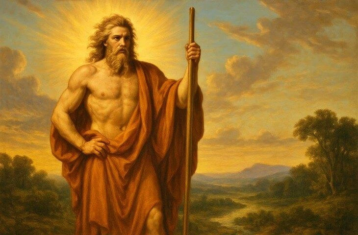
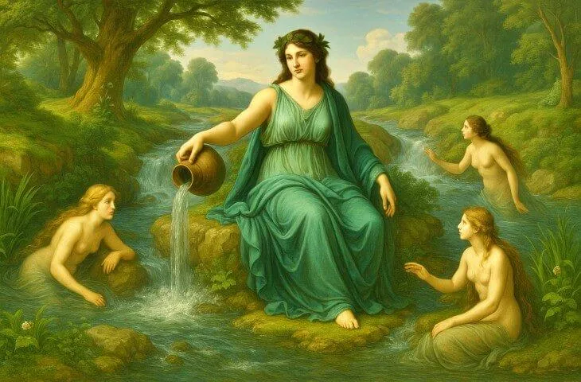
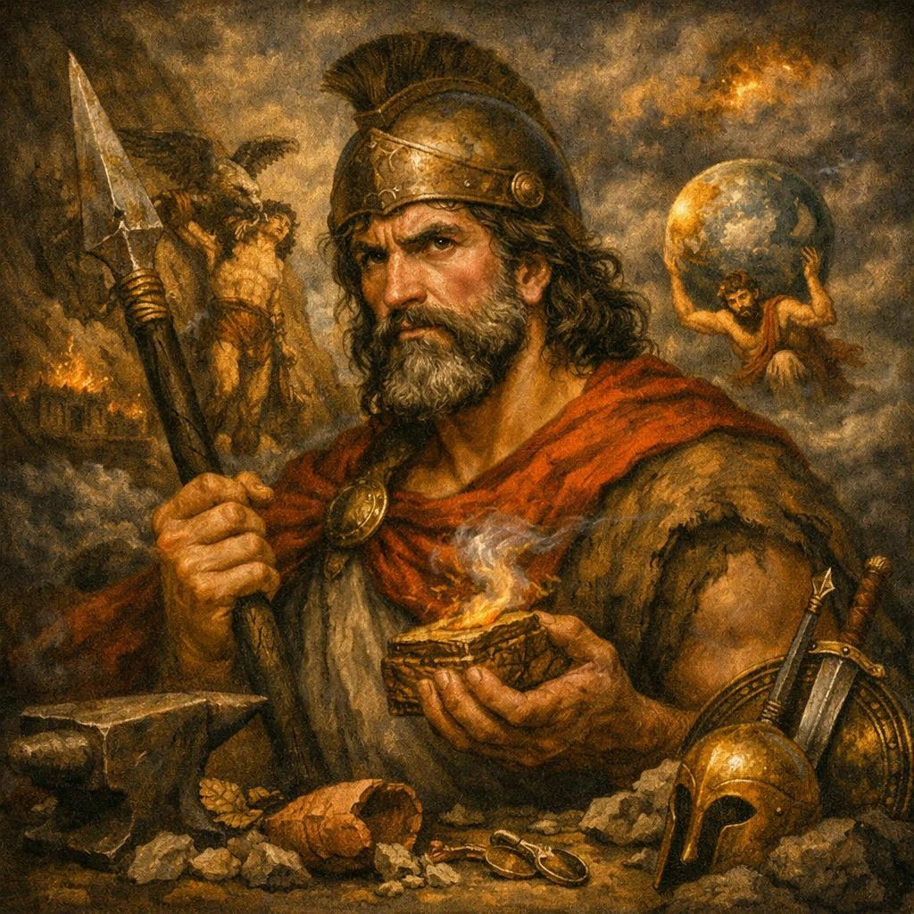

Quem eram os titãs?
Os titãs eram os filhos de Urano (o Céu) e Gaia (a Terra). Eles formavam a primeira geração de divindades poderosas e governaram o cosmos até serem derrotados pelos deuses olímpicos na Titanomaquia.
Principais titãs
-
Cronos: líder dos titãs, deus do tempo e pai de Zeus.

-
Reia: esposa de Cronos e mãe dos deuses olímpicos.

-
Oceano: titã que representava as águas que cercavam o mundo.

-
Hiperião: titã da luz e pai do Sol, da Lua e da Aurora.

-
Tétis: titânide das águas doces e avó de Aquiles.

-
Jápeto: pai de Prometeu, Epimeteu e Atlas.

A Titanomaquia
A guerra entre titãs e deuses durou dez anos. Com a ajuda dos Ciclopes e dos Hecatônquiros, Zeus e seus irmãos venceram Cronos e aprisionaram os titãs no Tártaro. Veja mais detalhes na história da mitologia grega.